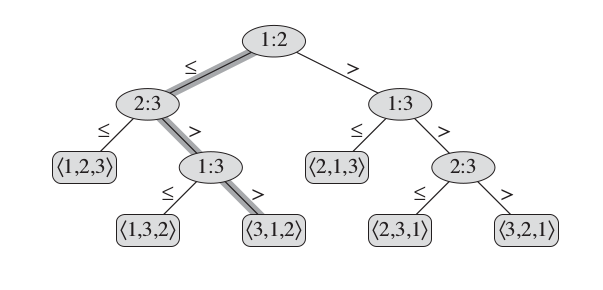

Assumption
The elements in the array are black boxes, and only comparison can be made between two elements.
The decision-tree model
Given a sorting algorithm $A$, we record all possible comparison operations executed in $A$.
! A comparison operation: $(i,j)$ where $i, j$ are the original index of the elements.

The leaf records the final ordering of the original index.
Q:
How many comparison operations did $A$ take as illustrated in the diagram?
What is the worst case number of comparision operations?
What type of tree is the deicion tree?
Binary tree
How many leaf nodes are there for $n$ elements?
All possible permutations of $[1, 2, 3, \dots n] = n!$
What is the height of the tree if there are $n!$ leaf nodes?
$\log_2(n!) \approx c\dot n\log(n)$
Theorem
Any comparision based sorting algorithm will necessarily take at least $c n\log(n)$ number of comparison operations in the worst case.
Optimal sorting
If a comparison based sorting algorithm always makes at most $c n\log(n)$ number of comparisons, then it’s called optimal.
| Algorithm | Optimal? |
|---|---|
| Insertion sort | No, $n^2$ |
| Mergesort | Yes |
| Quicksort | No, $n^2$ in the worst case |
If an array contains (bounded) integers, we can beat optimal comparison based sorting.
Why?
Elements are not blackboxes. We can look at individual digits of an bounded integer.
Assumptions:
- The elements are integers.
- The elements are all in the range of $[0, k-1]$ for some $k \geq 0$.
Amazing fact:
With $n$ elements, we can do it with only $2\cdot(n+k)$ number of instructions, compare to $n\log(n)$ in the case of optimal comparison sorting.
def empty_array(size, init=None):
return [init for i in range(size)]
! allocate an empty array with an optional initial value.
def COUNTING_SORT(A):
n = len(A)
k = max(A) + 1
B = empty_array(size=n)
C = empty_array(size=k, init=0)
for a in A:
C[a] = C[a] + 1
for i in range(1,k):
C[i] = C[i] + C[i-1]
for a in reversed(A):
B[C[a]-1] = a
C[a] = C[a] - 1
return B
A.$C[x] = |\{y\in A: y\leq x\}|$Question:
Is
COUNTING_SORTstable?
Answer:
Yes. It’s crucial to place $x$ into
Bfromreverse(A)instead ofA.
COUNTING_SORT requires too much memory in practice to be applied to arrays with large integer values. However, it will be instrumental later (as part of radix sort).The measure of algorithmic efficiency will be made much more rigorous in the next section of this course.